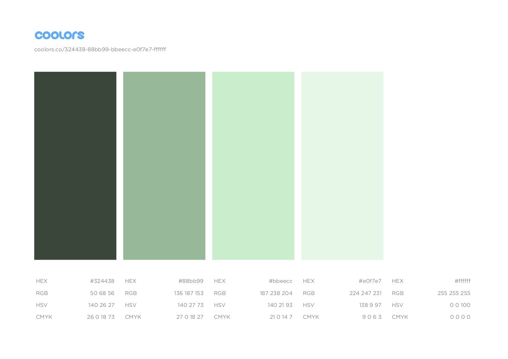

color scheme
The main colors for this website is an analogous seafoam green color palette. Green is a very strong color used to represent growth, outdoors, and gardening. I wanted to keep the color palette simple yet appealing. This keeps the website welcoming and not over whelming. Black will also be the text color to give it some more contrast from the colors.